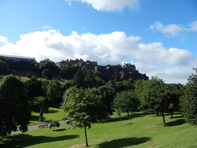
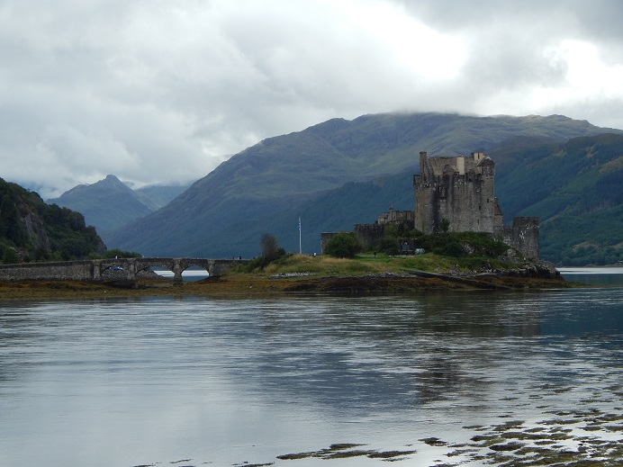
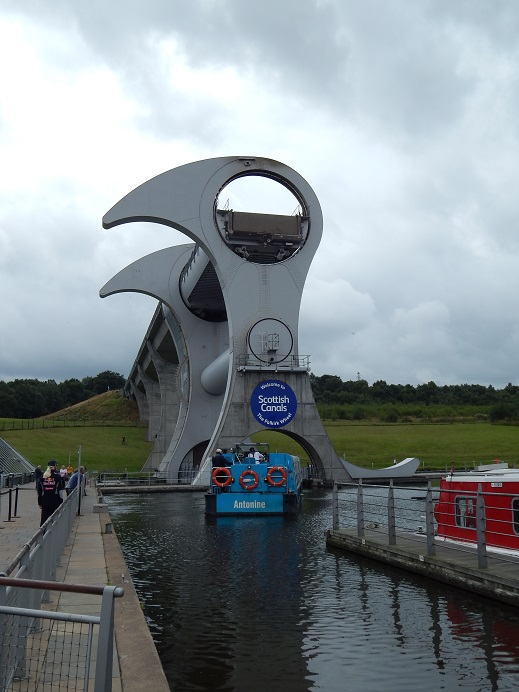
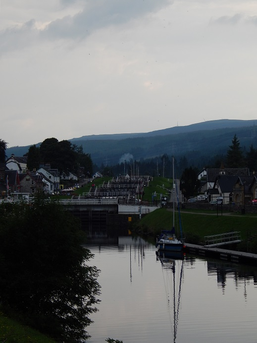
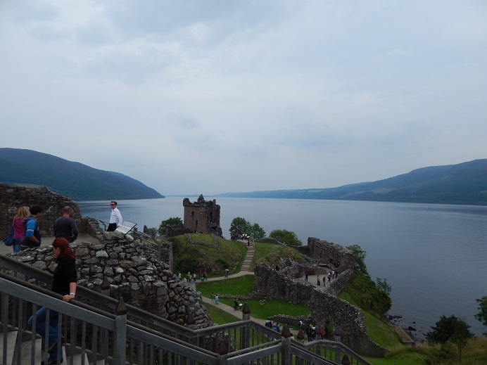
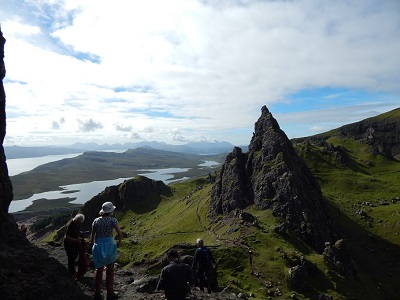
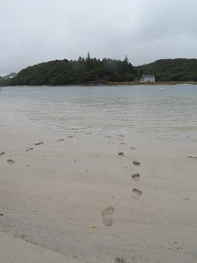

Scotland
Taste it, Hike it, Enjoy it!
You can try several types of hiking in Scotland. If you like the nice and comfortable walk, go hiking in the Lowlands. If you like challenges, head to HighLands! Ben Nevis (1343 m), Old Man the Storr and the Three Sisters Rock are waiting for you! Or do you want to cruise the canal at Falkirk after a short walk? You can do this too, but don’t miss the water wheel! Do you like walking on the sandy beach? Head to Glencoe and Oban.
Edinburgh castle
Eilan Dolan castle - Highlander
Falkirk water wheel
Fort augustus and the Channel tour
Loch Ness
Isle of Skye - Old man of Storr
Glencoe shore
